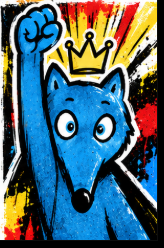

Marine — Paul Verlaine
Lire, observer et comprendre le poème illustré.
DÉCOUVRIR →
Les activités du moment à retrouver en un clic.
Choisis une rubrique pour retrouver les leçons et les jeux.
Lire, observer et comprendre le poème illustré.
DÉCOUVRIR →
Dictées et histoire des arts – Voyage dans le temps, cycle 3, Mélanie Pouëssel, Éditions Retz.
Accorder noms et adjectifs au pluriel.
JOUER →Écrire correctement les nombres en toutes lettres.
JOUER →Choisir entre s et ss.
JOUER →Retrouver le vrai sujet et accorder le verbe dans les phrases pièges.
JOUER →Reconnaître les noms, noms propres, noms communs et adjectifs.
OUVRIR →Reconnais les verbes, trouve leur groupe ou relève les défis du dojo.
CHOISIR UN JEU →Les prochaines ressources seront rangées ici.
5 nombres · 4 opérations · 1 cible.
Combine, calcule et marque le plus de points possible.
Frise et étiquettes pour classer les dates et personnages.
EXPLORER →Découvrir comment les Romains écrivaient les nombres, puis déchiffrer des inscriptions.
JOUER →
Une méthode d’anglais fondée sur des saynètes et des jeux, cycle 3, de Sylvie Hanot et Christine Hanot. Écouter, répéter, mémoriser avec les flashcards, puis comprendre et jouer les dialogues des BD.
Illustration : couverture du cahier de la méthode fourni à la classe (ce visuel n’est pas la couverture du livre). Ces ressources accompagnent une utilisation dans le cadre de notre classe uniquement ; les documents des autrices ne sont pas libres de diffusion. Site des autrices ↗Retrouve les 22 leçons et, pour chacune, ses accès aux jeux, à la BD et à la BD sonorisée lorsque celle-ci est disponible.
VOIR LES 22 LEÇONS →Dounia et la princesse d’Alep, La Petite Vendeuse de soleil et Capitaines !
DÉCOUVRIR LES FILMS →Exprimer un désaccord sans blesser, écouter l’autre et chercher une solution.
DÉCOUVRIR & JOUER →